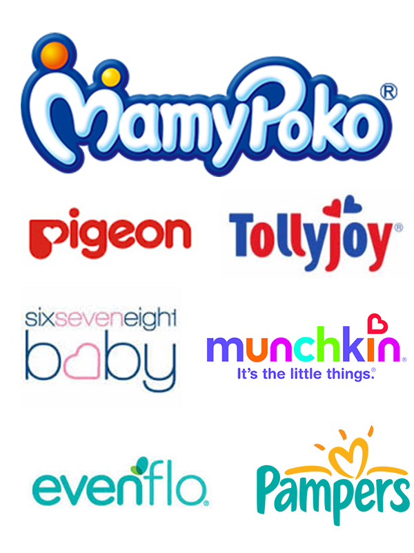
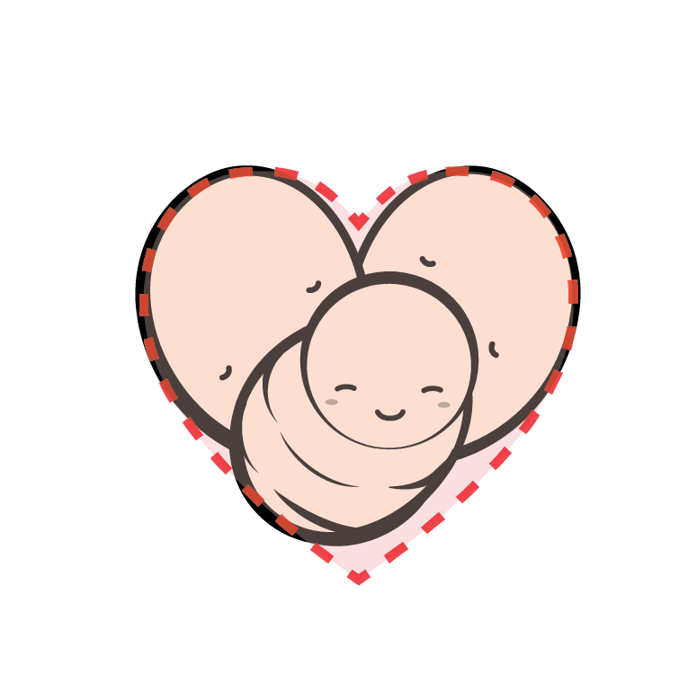
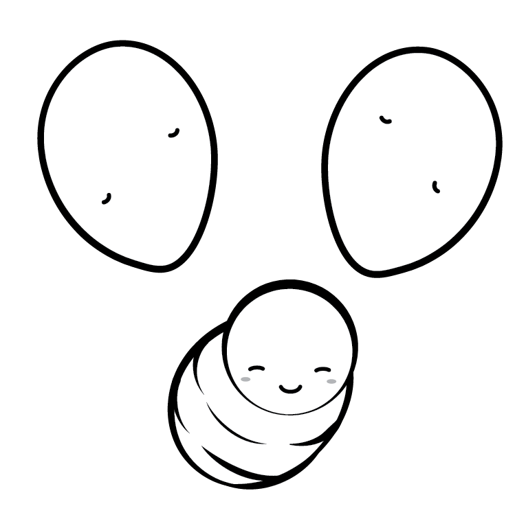
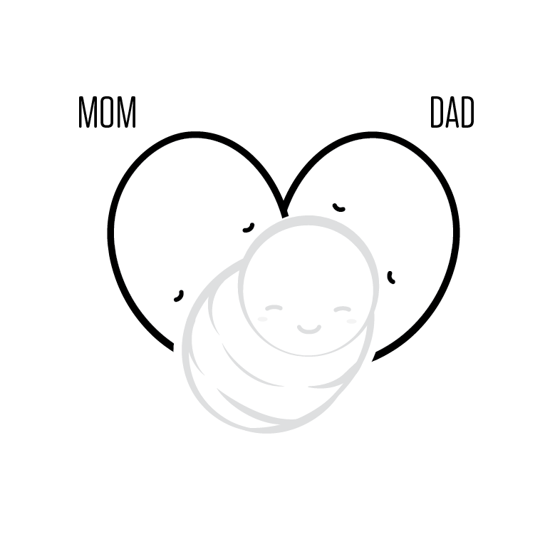
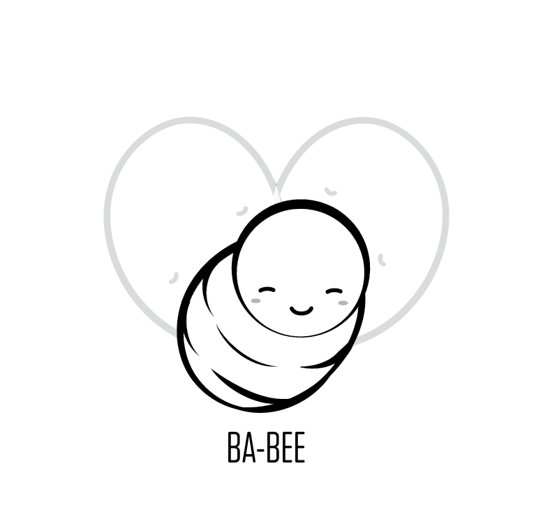
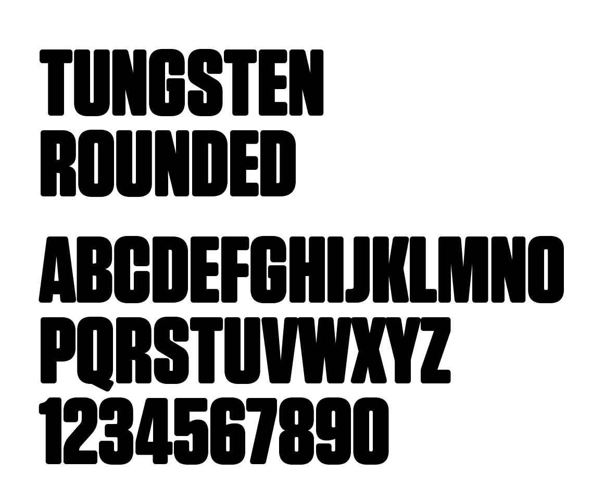
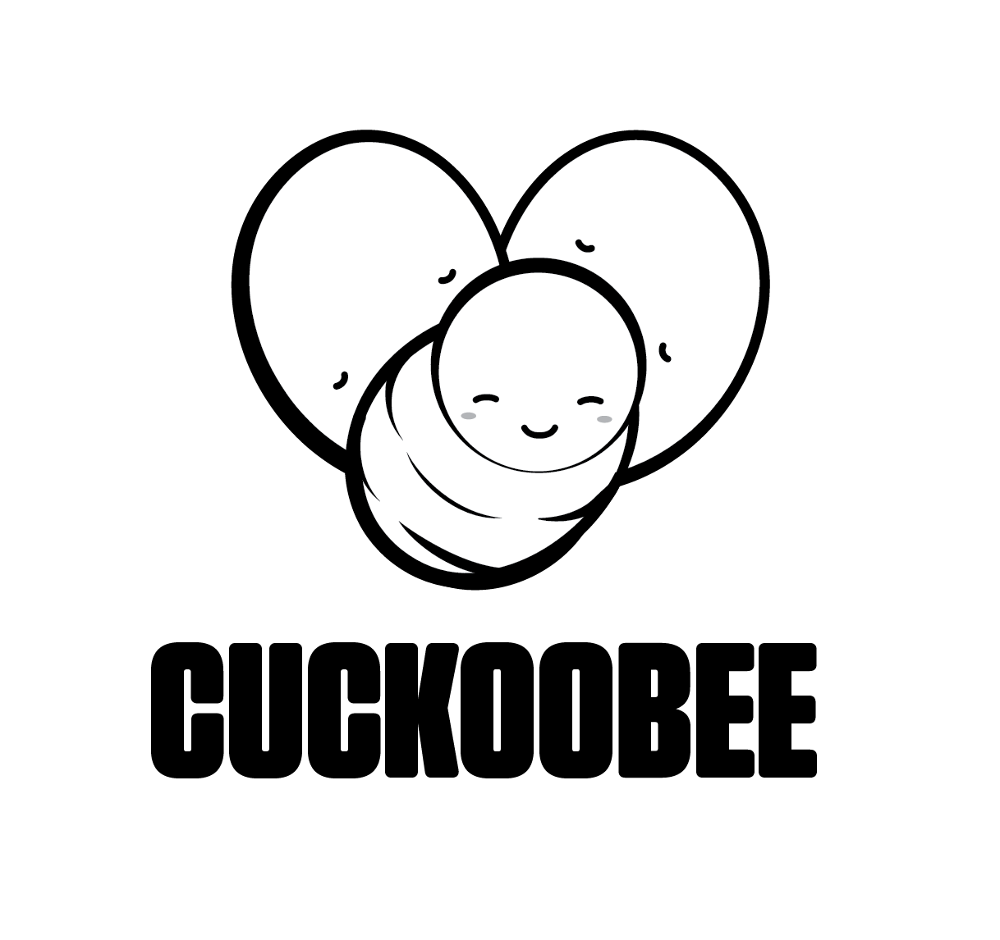

Always Bee my Baby
The Concept : A Parent’s love is eternal
Cuckoobee prides itself on delivering high-grade quality, easy to use and reliable child care products for the discerning parents.
”Happy Products for your Baby"
Nothing makes Cuckoobee happier than to see parents be able to take better care of their children. Often, parents would spend more time researching about the product and figuring out how to get things to work.
Cuckoobee stays out of the way so you can focus on taking care of your youngling. Cuckoobee lets you focus on showering your baby with love.
Real Unconditional Love
Nothing is more unconditional than a parent’s love for their child. It is only normal for parents to wish and give their babies things that will delight them and make them smile.
Nothing is more rewarding and fulfilling to any parent than to see their babies happy, excited and curious.
Cuckoobee comes out of love.
A parent's love is eternal and stays with the child forever.
Bottled up Emotions
❤s are the universal symbol for love.
The use of hearts on anything that connotes strong positive emotions is ubiquitous.
Everyone understands this symbol.
It would be the obvious route to take to plug in hearts to our logo.
Inasmuch as it is an effective symbol because it is something that everyone knows, we do not want to just get lost in the deluge of baby products in the market.
Not the best way to be seen, right?
Love the Grid
So instead of simply using the ubiquitous ❤ to symbolize love, which is a much expected cliché, we instead take a more creative route and use the heart as our baseline.
We incorporate the heart as a design element but not as you might think. Instead, we use the heart as the basis of our grid and arrange the components of the logo to roughly conform to the shape of the underlying shape.
Central to the development of every family is love.
Intertwined Circles Bee-come one
A traditional component of a family consists of a mother, a father and a child.
To communicate effectively, we always consider crafting a mark with as less visual noise as possible. The mark should have a simple and recognizable silhouette. This not only makes the mark easily recognizable from a distance, it also makes it feel forthcoming and familiar.
Our identity is comprised of 3 parts. Why 3? The 3 circles symbolising the 2 parents and a child.
Families act as one unit and are better when united in their goal.
The mother and father become the wings and evoke love and care towards the child. It is with their care and love that they "raise" their child. Parents will do anything to give their children nothing but the best in life.
The baby bee is the center of everything and since Cuckoobee is a brand that centers around the infant and child care, we show the heart in the bee...
Typography : A Stand Up
While the mark conveys the softness and care of parents love, we juxtapose this feeling with a sturdy and stable typeface. It should not be too stern that it deviates from the overall feel of the identity. 
We employ Tungsten Rounded because Tungsten is relaxed without being too overbearing. It is earnest and youthful; it is playful and friendly but it is not wacky and kiddie.
We need a typeface that will communicate stability, trust and longevity.
Tungsten says all of this, plus more.
The Final Word
Emotion is what connects us all.
Love, Sadness, Fear, Care and Joy.
Designing for babies and parents should be engineered to instigate an emotional response.
Design that appeals to the emotion and aim the heart is the most powerful design. There are designs that are technically sound and proportional but don’t speak to our souls.
Emotions are what pushes us to buy and support brands.
People do not buy what you are selling.
People buy that is why you are selling.
The identity accomplishes in communicating that Cuckoobee is all about caring thoughtful products for your baby.